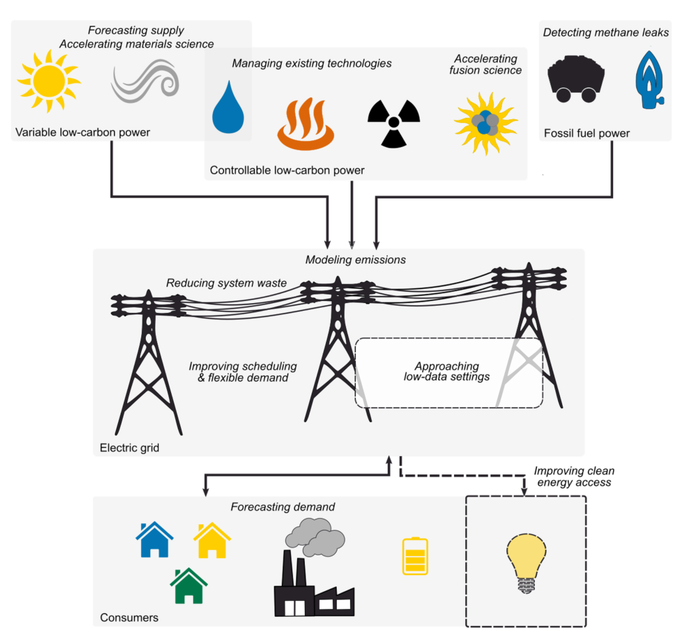

kEnergy
Scientific machine learning for wind, solar resources, emissions and the energy transition.
2022 · ACM computing surveys (CSUR) 55 (2), 1-96
D Rolnick, PL Donti, LH Kaack, K Kochanski, A Lacoste, K Sankaran, et al.

Machine-learning opportunities across electricity generation, networks and demand. Figure 1 · D Rolnick et al., 2022Read publication · Google Scholar
2024 · AGU Fall Meeting Abstracts 2024, IN51B-03 · Conference abstract / presentation
D Salles Civitarese, JLLG Guevara Diaz, SK Mukkavilli, J Schmude, et al.
Read publication · Google Scholar
2024 · AGU Fall Meeting Abstracts 2024 (1662), A41G-1662 · Conference abstract / presentation
A Fathi, JL Sousa Almeida, E Bentivegna, F Cardoso, B Elmegreen, et al.
Read publication · Google Scholar
2023 · arXiv preprint arXiv:2312.13212 · Preprint
T Kurihana, K Yeo, D Szwarcman, B Elmegreen, K Mukkavilli, J Schmude, et al.
Read publication · Google Scholar
2023 · AGU Fall Meeting Abstracts 2023 (8), A12H-08 · Conference abstract / presentation
SK Mukkavilli, W Trojak, JL Sousa Almeida, B Elmegreen, C Watson, et al.
Read publication · Google Scholar
2018 · Journal of Applied Meteorology and Climatology 57 (3), 493-515
SK Mukkavilli, AA Prasad, RA Taylor, A Troccoli, MJ Kay
Read publication · Google Scholar
2015 · American Meteorological Society Meeting Abstracts 95, J6. 3 · Conference abstract / presentation
SK Mukkavilli, MJ Kay, AA Prasad, R Taylor, A Troccoli
Read publication · Google Scholar
2017 · Penguin; edited by Paul Hawken
Research contribution by S. Karthik Mukkavilli
Read publication · Google Scholar
Talk
How Can AI Accelerate the Global Energy Transition? — S. Karthik Mukkavilli